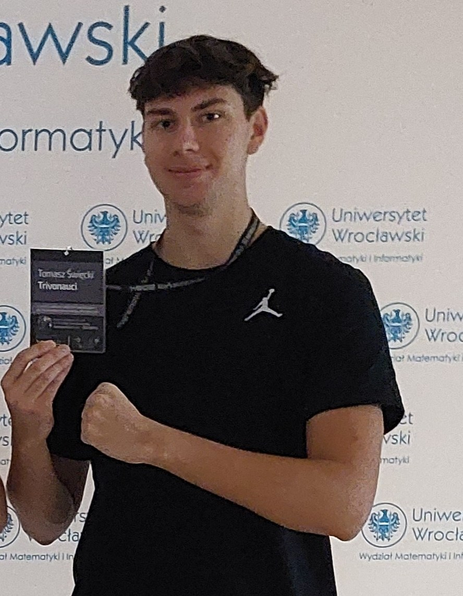
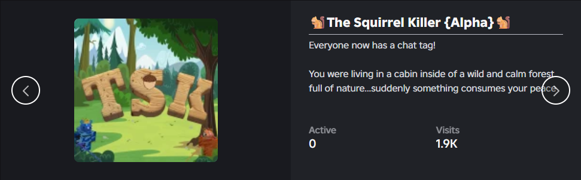
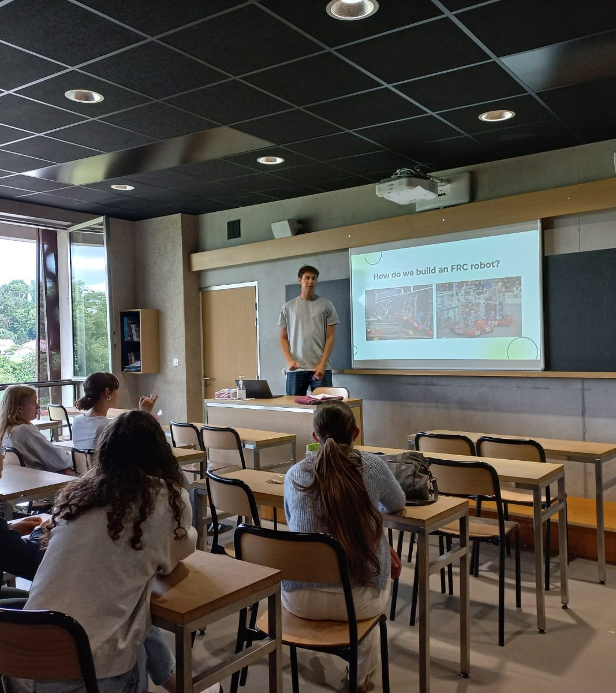
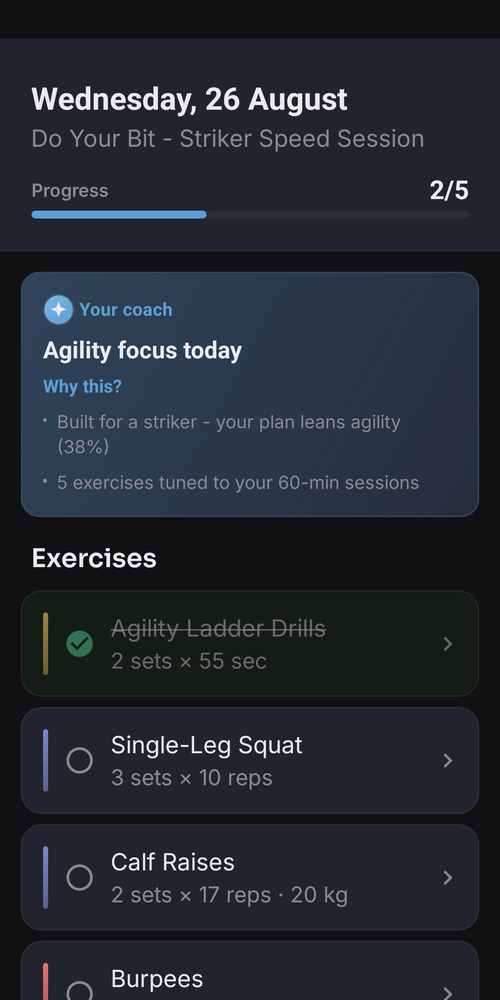
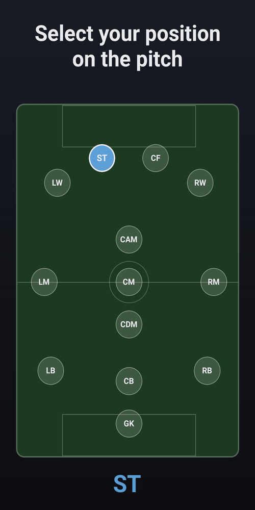
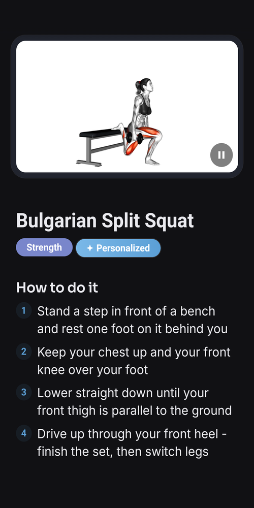
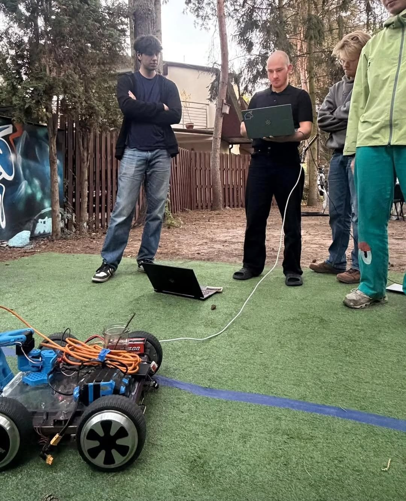

Informatyka + Matematyka · Uniwersytet Warszawski
Od gier w Roblox do robotów -
kim jestem i co chcę budować

Informatyka i matematyka na UW. Stypendium Rektora 2025/26
Uczę C++ i Pythona w Szkole Programowania. Mentoruję 15+ licealistów w XXVII LO
Gry, roboty, aplikacje mobilne, a teraz AI. Lubię doprowadzać rzeczy do końca
Półprofesjonalna koszykówka od 2021, medale w ligach. Wsady, siatkówka, narty
Wspólny mianownik: lubię rywalizować i lubię budować
Początki
Horror w stylu Granny, z własnymi zwrotami akcji
Programowanie w Lua i projektowanie rozgrywki
Szachy od 2021, Top 100 w Polsce w Clash Royale (2019)
Tu nauczyłem się kończyć projekty

1,9 tys.
wizyt w The Squirrel Killer
Top 100
XXXII OI, 2025
Top 30
Politechnika Warszawska, 2025
3 pkt
2024
Dziś to doświadczenie przekazuję dalej jako trener
FIRST Robotics · drużyna #10598
~10
osób w moim zespole technicznym
1. miejsce
Bosphorus Regional, Stambuł 2025
Houston
Mistrzostwa Świata FRC 2025
Prowadziłem software i strategię techniczną. Naszą drużynę prezentowałem m.in. licealistom z Lyonu

Lyon: jak budujemy robota FRC
Współzałożyciel i lead developer
Plan treningu piłkarskiego poza boiskiem, dopasowany do pozycji zawodnika
3600+
aktywnych użytkowników
MRR
dochodowe subskrypcje
iOS + Android
jedna baza kodu, React Native
AI
kamera ocenia technikę ćwiczeń



Teraz · ML, AI i robotyka autonomiczna

Hackathon w zespole. Kamera głębi znajduje szyszkę, robot podjeżdża, a ramię chwyta ją ruchem wyuczonym z 50 demonstracji (sieć ACT)
~140 000
neuronów
w symulacji
Zasymulowałem cały mózg muszki owocowej, żeby sprawdzić, czy rozwiąże zadanie z OI. Wynik: poziom losowy
Uczę się z YouTube, z Claude i z materiałów MIMUW
Ludzi z Inovo, founderów i inwestorów - szczególnie w AI i robotyce. Chętnie pogadam po prezentacjach
W czym pomogę: aplikacje mobilne od zera do sklepu, prototypy ML i robotyki, algorytmika, design produktów, influencer marketing
tomekswiecki1@gmail.com · github.com/TomkeMonke